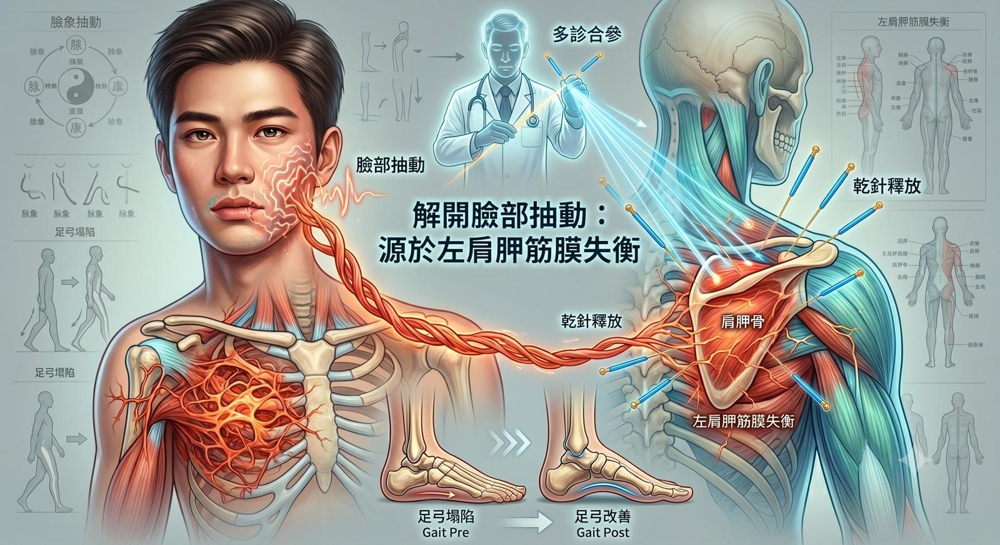

這陣子版面安靜了許久。前些日子探討耳鳴紀錄的文章，意外帶來了龐大的看診量，我也趁…
這陣子版面安靜了許久。前些日子探討耳鳴紀錄的文章，意外帶來了龐大的看診量，我也趁著這段沉澱期，重新思考了網路傳播的影響力與自己現有的能力。
有些多來診者告訴我，很感謝網路無遠弗屆，讓他們能跨越地區限制，找到另一種處理身體困擾的角度。對於耳鳴，我始終不敢妄言「完全治癒」，但能透過內傷併治的整合處置，讓飽受困擾的患者感覺到聲音開始產生變化、甚至穩定在一個相對安靜、可忽略的日常狀態，這便是我目前能盡的最大努力。
而今天，診間來了一個非常特別的案例。
他是一位正值壯年的年輕男性，主訴是「左臉會不自主地無法控制抽動」。這個困擾跟著他大約六年了（約莫是從完成牙套療程後開始出現）。這些年來，他走訪各大醫院，該做的神經學與影像檢查都做了，除了左後枕部有輕微血管器質性病變，但始終找不到明確的關聯原因。因為近期準備求職面試，他不希望臉部的抽動成為面試時的阻礙，於是輾轉來到了這裡。
🔍 脈象與理學的雙重導航：看見冰山下的張力網絡
在 肌筋膜脈學中醫應用的脈象中，明確指向「頸椎筋膜張力抑制」的訊號。但在結構治療的思維裡，我們不能只依賴單一指標。
除了脈象，也高度重視理學檢查，特別是觸診與動態觀察。頸椎的問題，考慮人體關節動力鏈，通常需要連帶上胸椎、鎖骨與肩胛骨一併檢視。
在高位頸椎的重點關隘裡，觀察到他有明顯的「顳顎關節開闔軌跡偏移」以及「左右頭轉角度不對等」。視線順著張力往下追蹤，在肩胛、鎖骨與上胸椎段，進一步發現了不對稱的肩胛靜態位置，以及動態下異常的「肩胛肱骨節律（Scapulohumeral rhythm）」。
經過左右兩側肩帶的詳細比對，終於確認了真正的嫌疑犯：左側肩帶周邊是引發整體張力失衡的主要源頭，而右側肩則是身體為了維持日常功能，被迫產生的強制代償。
⚡ 乾針精準介入：解開牽扯臉部的隱形繩索
既然找到了源頭，治療便直接針對左側肩胛穩定的重點肌群展開。
透過乾針，精準介入下斜方肌進行張力修復，接著處理闊背肌、旋轉肌袖肌群，以及最重要的關鍵地帶——位於肱骨結節間溝處（上胸與下背張力交匯點）的筋膜張力釋放。
治療結束後，我請他再次嘗試那些平時會誘發左臉抽搐的動作。
他驚喜地發現，不僅整體抽搐的頻率與強直強度大幅下降，那種原本從肩關節一路往上牽拉至頸椎、下顎的緊繃感，也明顯減少了許多。
更令我們振奮的是，在觀察治療前後的步態紀錄時，發現他原本坍塌的足弓力學與步態也產生了顯著的進步！這個遠端的變化，完美且直接地驗證了人體「張力共構系統（Tensegrity）」由上而下、牽一髮動全身的力學事實。
👨⚕️ 醫者的反思與結語：不單打獨鬥的謙卑
這次巨幅的進步，讓這位帥哥在離開診間時，激動地跟我握手道謝。
這個舉動讓我既開心又充滿感激。開心的是，我能實質幫助他搬開求職路上的阻礙；感激的是，他給了我機會去實踐與驗證腦中的診療思路。
但同時，我也戰戰兢兢。因為今天只是開篇的第一章，後續的重建還會繼續。面對複雜的身體，醫者就像偵探，必須邊走邊修正，一層一層拆解暫時打結的人體張力系統。每次的治療，都是作為輔導員的我們，與患者身體的一場共舞。
以往大眾對中醫的印象，常停留在單打獨鬥、單槍匹馬就能包治百病的浪漫想像。但真正深入臨床就會知道，面對人體的浩瀚，我們必須永遠保持敬畏與謙卑。
我很慶幸這幾年能在東門，能跟以正學長同時段開診，從以前的菜鳥模樣，被學長帶著往前，邊看邊學習，一起並肩作戰。在看診之餘，我們能針對困難案例共同討論、互相交流不同的醫療視角。在這樣「多診合參」的絕佳環境下，不僅大幅提升了診療視角的廣度與深度，也讓我這幾年來獲得了無法言喻的成長。
期許在未來的路上，能夠更加穩定與茁壯，繼續為需要的人解開身體的結。
東門中醫 太初中醫診所
#顏面抽搐 #肌筋膜張力 #肩胛肱骨節律 #乾針治療 #足弓力學 #全人診療 #多診合參
【 ⚠️ 醫療免責聲明與就醫提醒 】
本文分享之臨床案例已進行嚴格的去識別化與隱私保護處理。顏面不自主抽搐之成因極為複雜，可能涉及腦神經血管壓迫或其他器質性神經病變。若有相關症狀，請務必優先尋求神經內外科等常規醫療系統，進行完整之影像與神經學鑑別診斷。本文所述之筋膜張力調整，為已排除器質性病變後之結構性功能介入。治療計畫與成效因個人體質而異，請與您的主治醫師進行充分討論。
